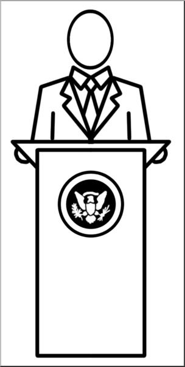
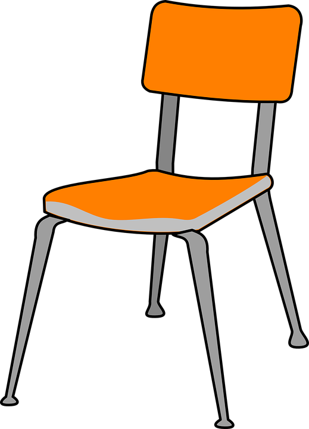
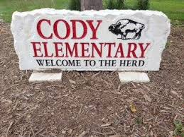

 Like most people, I've been in orchestra since 4th grade This year, I'm in 1st hour and am one of the many orchestra presidents
 9 year old me chose to play the cello over the other instruments because I thought that only cellists got to sit, so I was severely dissapointed walking into my first class and seeing enough chairs for everyone.
However, I don't regret my choice because I love the sound of the cello far more than any of the other instruments.
The last few years I've really fallen in love with orchestra! Starting this year I'm going to be volunteering at the Cody Elementary and MNMS because I do think that music is important for kids to be involved in.
